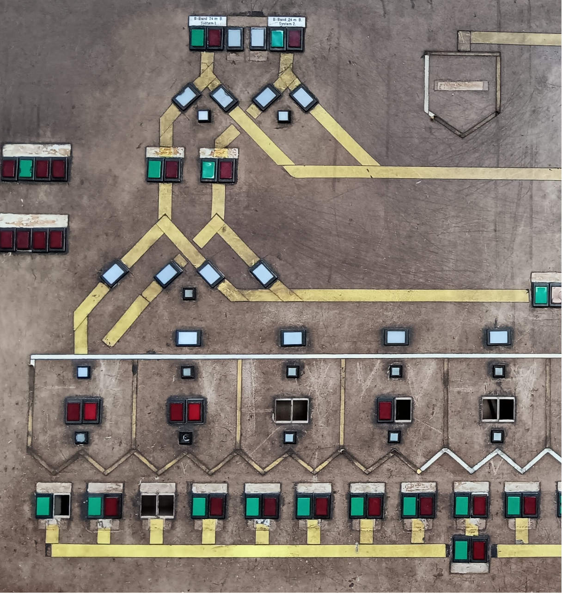

University College London
Gower Street
London WC1E 6BT
United Kingdom
Telephone: +44(0)20 3108 3243
Location: 1-19 Torrington Place. Room 233
|
Department of Statistical Science University College London Gower Street London WC1E 6BT United Kingdom Telephone: +44(0)20 3108 3243 Location: 1-19 Torrington Place. Room 233 |
|
 |
Contents
MRC Biostatistics Unit, Cambridge, UK, 2005-2011
PhD in social statistics (2004). Department of Statistics and Methodology, Utrecht University, the Netherlands, and Statistics Netherlands
Post-Master's programme Mathematical Modelling and Consultancy Skills (1999). Delft University of Technology, the Netherlands
Mathematics (MSc, March 1997) and Philosophy (MA, January 1996, highest distinction). University of Nijmegen, the Netherlands
----
Member of the Statistical Modelling Society, and past treasurer (2011-2019).
Annual conference of the society:
IWSM, which is in Oslo, in 2026. Journal:
Statistical Modelling.
----
Associate Editor, Biostatistics (2020-present).
Associate Editor, Statistical Modelling (2025-present).

|
|
Monograph on continuous-time models for multi-state processes CRC/Chapman & Hall, 2017 (link)
Material and software:
website
|
Pan S., Van den Hout A. (2023) Bivariate joint models for survival and change of cognitive function. Statistical Methods in Medical Research, 32, 474-492.
Bhatt R, Van den Hout A, Pashayan N. (2021) A multi-state survival model of the natural history of cancer using data from screened and unscreened population. Statistics in Medicine 40, 3791-3807. (Open Access)
Machado RM, Van den Hout A, Marra G (2021). Penalised maximum likelihood estimation in multi-state models for interval-censored data. Computational Statistics and Data Analysis 153.
Yoneda T, and others (2021). The Importance of Engaging in Physical Activity in Older Adulthood for Transitions Between Cognitive Status Categories and Death: A Coordinated Analysis of 14 Longitudinal Studies. The Journals of Gerontology: Series A, 76, 1661-1667.
Hoogendijk E, Rijnhart JJM, Skoog J, Robitaille A, Van den Hout A, Ferruccie L, Huisman M, Skoog I, Piccinin AM, Hofer SM, Muniz Terrera G (2020). Gait speed as predictor of transition into cognitive impairment: Findings from three longitudinal studies on aging. Experimental Gerontology 129.
Van den Hout A, Chan MS, Matthews FE (2019). Estimation of life expectancies using continuous-time multi-state models. Computer Methods and Programs in Biomedicine 178, 11-18.
Van den Hout A, Tan W (2019). Flexible parametric multi-state modelling of employment history. Statistical Modelling 19, 323-338.
Vermunt L, Sikkes AM, Van den Hout A, and others (2019). Duration of preclinical, prodromal and dementia Alzheimer disease stages in relation to age, sex, and APOE genotype. Alzheimer's & Dementia 15, 888-898.
Chan MS, Van den Hout A, Pujades-Rodriguez M, Jones MM, Matthews FE, Jagger C, Raine R, Bajekal M (2019). Socioeconomic inequalities in life expectancy of older adults with and without multimorbidity: a record linkage study of 1.1 million people in England. International Journal of Epidemiology, 48, 1340-1351.
Van den Hout A, Muniz-Terrera G (2019). Hidden three-state survival model for bivariate longitudinal count data. Lifetime Data Analysis 25, 529-545 (Open Access)
Bockenholt U, Cruyff MJLF, van der Heijden PGM, Van den Hout A (2019). On the measurement of non-compliance using randomized response models. In Hancock, Harring, Macready (Eds), Advances in Latent Class Analysis: A Festschrift in Honor of C. Mitchell Dayton. Charlotte, NC: Information Age Publishing, Inc.
Van der Noordt M, Van der Pas S, Van Tilburg TG, Van den Hout A, Deeg D (2019). Changes in working life expectancy with disability in the Netherlands, 1992-2016. Scandinavian Journal of Work, Environment & Health 45, 73-81.
Haeussler K, Van den Hout A, Baio G. (2018) A dynamic Bayesian Markov model for health economic evaluations of interventions in infectious disease. BMC Medical Research Methodology 18, 82. (Open Access)
Machado RM, Van den Hout A (2018). Flexible multistate models for interval-censored data: Specification, estimation, and an application to ageing research. Statistics in Medicine 37, 1636-1649.
Robitaille A, van den Hout A, Machado RM, Bennett DA, Cukic I, Deary IJ, Hofer SM, Hoogendijk EO, and others (2018). Transitions across cognitive states and death among older adults in relation to education: a multi-state survival model using data from six longitudinal studies. Alzheimer's & Dementia 14, 462-472.
Van den Hout A, Alberink A (2016). Posterior distributions for likelihood ratios in forensic science. Science and Justice 56, 397-401.
Muniz-Terrera G, Van den Hout A, Stasinopoulos DM, Rigby RA (2016). Analysing cognitive test data: Distributions and non-parametric random effects. Statistical Methods in Medical Research 25, 741-753.
Van den Hout A, Muniz-Terrera G (2016). Joint models for discrete longitudinal outcomes in ageing research. Journal of the Royal Statistical Society: Series C (Applied Statistics) 65, 167-186.
Van den Hout A, Fox J-P, Klein Entink RH (2015). Bayesian inference for an illness-death model for stroke with cognition as a latent time-dependent risk factor. Statistical Methods in Medical Research 24, 769-787. (Open Access)
Van den Hout A, Fox J-P, Muniz-Terrera G (2015). Longitudinal mixed-effects models for latent cognitive function. Statistical Modelling 15, 366-387.
Van den Hout A, Ogurtsova E, Gampe J, Matthews FE (2014). Investigating healthy life expectancy using a multi-state model in the presence of missing data and misclassification. Demographic Research 30, 1219-1244. (Open Access)
Van den Hout A, Tom BDM (2013). Survival Analysis and the Frailty Model. In The SAGE Handbook of Multilevel Modeling, MA Scott, J Simonoff, and BD Marx (eds.). Thousand Oaks, CA: SAGE Publications Ltd. (Software)
Muniz-Terrera G, Van den Hout A, Piccinin AM, Matthews FE, Hofer SM (2013). Investigating terminal decline: Results from a UK population-based study of aging. Psychology and Aging 28, 377-385.
Kapetanakis V, Matthews FE, Van den Hout A (2013). A semi-Markov model for stroke with piecewise-constant hazards in the presence of left-, right-, and interval-censoring. Statistics in Medicine 32, 697-713. (Open Access)
Van den Hout A, Muniz-Terrera G, Matthews FE (2013). Change point models for cognitive tests using semi-parametric likelihood. Computational Statistics and Data Analysis 57, 684-698. (Open Access)
Marioni RE, Valenzuela MJ, Van den Hout A, Brayne C, Matthews FE, MRC Cognitive Function and Ageing Study (2012). Active cognitive lifestyle is associated with positive cognitive health transitions and compression of morbidity from age sixty-five. Plos One 7.
Van den Hout A, Altorf M (2012). Randomised response: over het hoe en waarom van privacy-bescherming. STAtOR. (In Dutch, see VvS web site or pdf)
Marioni RE, Van Den Hout A, Valenzuela MJ, Brayne C, Matthews FE (2012). Active cognitive lifestyle associates with cognitive recovery and a reduced risk of cognitive decline. Journal of Alzheimer's Disease 28, 223-230.
Van den Hout A, Muniz-Terrera G, Matthews FE (2011). Smooth random change point models. Statistics in Medicine 30, 599-610. (BUGS-code broken-stick model, BUGS-code Bacon-Watts model)
Klein Entink RH, Fox J-P, Van den Hout A (2011). A mixture model for the joint analysis of latent developmental trajectories and survival. Statistics in Medicine 30, 2310-2325.
Muniz-Terrera G, Van den Hout A, Matthews FE (2011). Random change point models: investigating cognitive decline in the presence of missing data. Journal of Applied Statistics 38, 705-716. (Open Access)
Van den Hout A, Bockenholt U, Van der Heijden PGM (2010). Estimating the prevalence of sensitive behavior and cheating with a dual design for direct questioning and randomized response, Journal of the Royal Statistical Society: Series C (Applied Statistics) 59, 723-736. (Open Access)
Van den Hout A, Alberink I (2010). A hierarchical model for body height estimation in images, Forensic Science International 197, 48-53.
Van den Hout A, Gilchrist R, Van der Heijden PGM (2010). The randomized response model as a composite link model, Statistical Modelling 10, 57-67.
Van den Hout A, Matthews FE (2010). Estimating stroke-free and total life expectancy in the presence of non-ignorable missing values, Journal of the Royal Statistical Society: Series A (Statistics in Society) 173, 331-349. (Open Access)
Frank LE, Van den Hout A, Van der Heijden PGM (2009). Repeated cross-sectional randomized response data: taking design change and self-protective responses into account, Methodology 5, 145-152.
Van den Hout A, Matthews FE (2009). Estimating dementia-free life expectancy for Parkinson's patients using Bayesian inference and micro-simulation, Biostatistics 10, 729-743. (Open Access)
Van den Hout A, Jagger C, Matthews FE (2009). Estimating life expectancy in health and ill health using a hidden Markov model, Journal of the Royal Statistical Society: Series C (Applied Statistics) 58, 449-465.
Van den Hout A, Klugkist I (2009). Accounting for non-compliance in the analysis of randomized response data, Australian & New Zealand Journal of Statistics 51, 353-372.
Van den Hout A, Matthews FE (2009). A piecewise-constant Markov model and the effects of study design on the estimation of life expectancies in health and ill health, Statistical Methods in Medical Research 18, 145-162
Van den Hout A, Matthews FE (2008). Multi-state analysis of cognitive ability data: a piecewise-constant model and a Weibull model, Statistics in Medicine 27, 5440-5455.
Buter TC, Van den Hout A, Matthews FE, Larsen JP, Brayne C, Aarsland D (2008). Dementia and survival in Parkinson's disease - a twelve year population study, Neurology 70, 1017-1022.
Cruyff MJLF, Bockenholt U, Van den Hout A, Van der Heijden PGM (2008). Accounting for self-protective responses in randomized response data from a social security survey using the zero-inflated Poisson model, Annals of Applied Statistics 2, 316-331.
Cruyff MJLF, Van den Hout A, Van der Heijden PGM (2008). The analysis of randomized-response sum score variables, Journal of the Royal Statistical Society: Series B (Statistical Methodology) 70, 21-30.
Van den Hout A, Van der Heijden PGM, Gilchrist R (2007). The logistic regression model with response variables subject to randomized response, Computational Statistics and Data Analysis 51, 6060-6069. (Data)
Cruyff MJLF, Van den Hout A, Van der Heijden PGM, Bockenholt U (2007). Log-linear randomized-response models taking self-protecting response behavior into account. Sociological Methods and Research 36, 266-282.
Van den Hout A, Elamir EAH (2006). Statistical disclosure control using post randomisation: Variants and Measures for Disclosure Risk, Journal of Official Statistics 20, 711-731.
Willenborg LCRJ, Van den Hout A (2006). Peruco: A method for producing safe and consistent microdata, International Statistical Review 74, 271-284.
Van den Hout A, Kooiman P (2006). Estimating the linear regression model with categorical covariates subject to randomized response, Computational Statistics and Data Analysis 50, 3311-3323.
Van den Hout A, Lensvelt-Mulders GJLM (2005). On a 2 by 2 factorial design where the use of randomized response is one of the factors, Statistica Neerlandica 59, 434-447.
Van den Hout A, Van der Heijden PGM (2004). The Analysis of multivariate misclassified data with special attention to randomized response data, Sociological Methods and Research 32, 384-410.
Van den Hout A, Van der Heijden PGM (2002). Randomized response, statistical disclosure control and Misclassification: a review, International Statistical Review 70, 269-288.
Willenborg LCRJ, Van den Hout A (2000). Possibilities of PRAM to protect statistical data, Of Significance... 2, 65-69.
Van den Hout A (2004). Analyzing misclassified data: Randomized response and post randomization, Ph.D. thesis, Utrecht University. (pdf)
Van den Hout A (1999). The analysis of data perturbed by PRAM, WBBM report series 45, Delft: Delft University Press. (pdf)